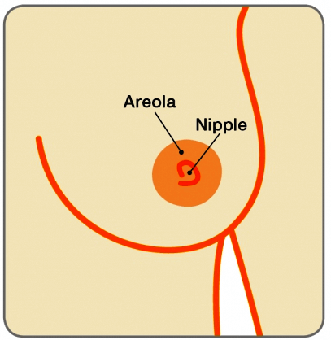

THE BREAST

Benign Breast health issues
Breast cysts
Preethi (name changed), a 40 yr old lady suddenly noticed a lump in her left breast overnight.
THE BREAST
THE NIPPLE

What is a Breast cyst?
The breasts are made up of ducts (tubes that carry milk to the nipple) and lobules (milk-producing glands), which are surrounded by fatty tissue and supportive tissue. Sometimes fluid-filled sacs develop in the breast tissue. These are Breast cysts. It is one of the commonest benign (non cancerous lumps) in the breast
How does it occur & at what age is it common?
It’s thought that they develop naturally as the breast ages and changes. Although one can develop breast cysts at any age, they are most common in women over 35 who haven’t yet reached the menopause. They occur more frequently as women approach the menopause and usually stop or are not as frequent after it. However, women who are taking hormone replacement therapy (HRT) after the menopause may also develop cysts.
Cysts can feel soft if they’re near the surface of the skin, or like a hard lump if they’re deeper in the breast tissue. They can develop anywhere in the breast, but are more commonly found in the upper half. For some women cysts can feel uncomfortable and even painful, and before a period cysts may become larger, and feel sore and tender.
It’s quite common to develop one or more cysts – either in one breast or both breasts – and this is nothing to worry about. There are also many women who have cysts without knowing about them.
How are they found?
Typically, a lady would notice a lump in her breast overnight. Cysts usually become noticeable as a lump in the breast, or are sometimes found by chance when having a breast examination or routine breast screening.
A Specialist Consultation is essential and it is important to undergo three different tests, often referred to as Triple assessment, so that a definite diagnosis can be made.
Triple assessment - clinical breast examination, a mammogram (breast x-ray) and ultrasound scan (which creates a picture of the breast using high-frequency sound waves) and if necessary an ultrasound guided aspiration of the cyst fluid. The fluid may be sent to the laboratory for testing particularly if it is bloodstained, as bloody fluid in the aspirate indicates a very small risk that this may be a sign of breast cancer.


Is a cyst always considered to be benign (non malignant)?
Most cysts are benign (non cancerous) and there is no additional risk of developing breast cancer. However, rarely, some cysts can harbour a cancer (intracystic cancer). Blood stained aspirate from the cyst must be carefully assessed to make sure there is nothing sinister
How are Breast cysts managed?
If the Triple assessment has confirmed the presence of a simple Cyst, the lady can be reassured that the lump is not a cancer and that it will not lead to a cancer. Many cysts go away by themselves and are nothing to worry about. Majority of breast cysts need not be aspirated. There is no need for surgery to remove cysts.
If the cyst is large and causing discomfort, the fluid can be drained using a fine needle and syringe with or without ultrasound guidance.
Once the fluid has been drawn off, the cyst usually disappears. The fluid drawn off from the cyst can vary in appearance, from clear to very dark.
If the breast ultrasound reveals an intracystic growth, the cyst fluid must be aspirated and sent for cytology in addition to undertaking a core needle biopsy of the intracystic growth to rule out the presence of intracystic cancer.
However, it must be remembered that intracystic cancers are rare and the vast majority of women with cysts need to be only reassured.
Can the cyst come back after aspiration?
Cysts can come back, or one may develop new cysts. It is important not to presume that it is a recurrent cyst. A Specialist consultation is essential for assessment & confirmation. The treatment for cysts is the same each time.
Is a follow up required after diagnosis of cysts?
If the cyst has been drained, it is important for the Specialist to see the lady in a few weeks to see if it has refilled. A Breast Ultrasound scan should be done during the follow up visit.